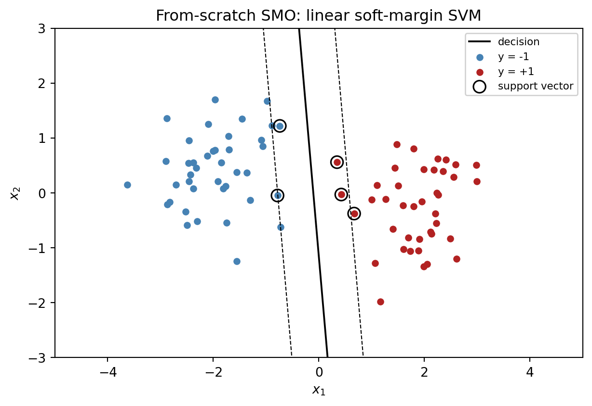
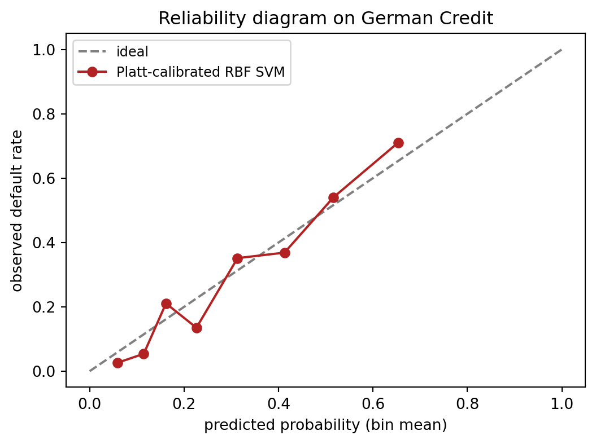

Show code
import sys
sys.path.insert(0, '../code')
import numpy as np
import pandas as pd
import matplotlib.pyplot as plt
from creditutils import load_german_credit, load_taiwan_default, ks_statistic
np.random.seed(0)Support vector machines sit in an unusual place in the credit scoring literature. In the benchmark of Baesens et al. (2003) and the update of Lessmann et al. (2015) they are consistently competitive with the best classifiers on small and medium application datasets, occasionally edging out logistic regression and sometimes matching tree ensembles. Yet in production they are rare. Almost every large bank that deployed an SVM scorecard eventually retired it in favor of a gradient-boosted tree or a logistic scorecard. The reasons are operational rather than statistical: kernel SVMs scale quadratically in the training size, they do not return calibrated probabilities out of the box, and they resist the additive monotone explanations that regulators expect. Understanding exactly where the method shines and where it breaks is therefore more useful than rehearsing the standard derivation.
This chapter takes the method seriously as a classifier and as a tool for anomaly detection in application fraud. We build the primal and dual formulations from scratch following Cortes & Vapnik (1995) (Chapter 13), derive the Karush, Kuhn, and Tucker (KKT) conditions that characterize the support vectors (Section 13.2), and ground the kernel trick in Mercer’s theorem (Mercer, 1909) and the representer theorem (Kimeldorf & Wahba, 1971) (Section 13.3). We then implement a simplified sequential minimal optimization (SMO) routine (Platt, 1998) on a toy two-dimensional problem to make the margin tangible, benchmark a kernel SVM on the UCI German Credit dataset, and push the linear variant through a one-million-row synthetic portfolio to show what is and is not feasible (Section 13.5). We close with Platt scaling for probability calibration (Platt, 1999) (Section 13.6) and with a one-class SVM (Schölkopf et al., 2001) (Section 13.7) flagging anomalous applications on the Taiwan credit card panel.
The practical message is blunt. Use kernel SVM as a diagnostic tool on small samples, as an ensemble member, or as a baseline you need to beat. Reach for LinearSVC (Fan et al., 2008) or a Nystroem (Williams & Seeger, 2000) plus linear model pipeline when the kernel is valuable but the data exceeds fifty thousand rows. For portfolio scale credit applications, the kernel version is almost never the right answer.
Emerging-market portfolios change the calculus. A Vietnamese finance company or a Philippine fintech may hold five to thirty thousand positives, sparse CIC coverage, and a feature matrix heavy on zero-valued indicators (no prior loan, no CIC query, no employer payroll tie). That is exactly the regime where a kernel SVM with a well-chosen bandwidth is competitive with boosted trees on AUC, and where LinearSVC plus a Platt-calibrated probability becomes a credible scorecard replacement. The bottleneck is rarely statistical. It is the adverse-action letter under Circular 43/2016/TT-NHNN on consumer lending by finance companies and the data-minimisation clauses of Decree 13/2023/ND-CP, both of which push toward models that can be explained at the applicant level without a heavy SHAP pipeline (Government of Vietnam, 2023).
Let the training set be \(\mathcal{D} = \{(x_i, y_i)\}_{i=1}^N\) with \(x_i \in \mathbb{R}^p\) and \(y_i \in \{-1, +1\}\). In credit scoring, \(y_i = +1\) denotes a bad account (default within the performance window) and \(y_i = -1\) a good account. A linear classifier takes the form \(f(x) = w^\top x + b\) and predicts \(\hat y = \operatorname{sign}(f(x))\). For a positive definite kernel \(k\) we write \(\varphi(x)\) for an implicit feature map with \(k(x, x') = \langle \varphi(x), \varphi(x') \rangle\). The Gram matrix is \(K \in \mathbb{R}^{N \times N}\) with entries \(K_{ij} = k(x_i, x_j)\). Slack variables are \(\xi_i \ge 0\). Dual multipliers are \(\alpha_i \ge 0\). The hinge loss is \(\ell_{\mathrm{hinge}}(u) = \max(0, 1 - u)\). The regularization parameter is \(C > 0\) for the soft-margin primal and \(\lambda = 1 / (CN)\) for the equivalent penalized-loss form. The Gaussian kernel bandwidth is \(\gamma > 0\) with \(k(x, x') = \exp(-\gamma \lVert x - x' \rVert^2)\).
Sign conventions differ across the literature. We follow Cortes & Vapnik (1995) and set \(y_i \in \{-1, +1\}\). The scikit-learn API expects \(y_i \in \{0, 1\}\) and internally remaps labels, which is worth remembering when reading decision functions. The class-weight parameter in SVC scales \(C\) per class: \(C_{+1} = C \cdot w_{+1}\) where \(w_{+1}\) is the weight of the positive class. This becomes important for credit data where the default rate is often ten percent or less, because unweighted \(C\) tuning tends to produce classifiers that ignore the minority class.
Assume first that \(\mathcal{D}\) is linearly separable, meaning there exists \((w, b)\) such that \(y_i (w^\top x_i + b) > 0\) for all \(i\). Any such \((w, b)\) classifies perfectly, so the set of perfect classifiers is generally infinite. The support vector machine, introduced by Boser et al. (1992) and formalized by Cortes & Vapnik (1995), selects the unique hyperplane that maximizes the distance to the nearest training point. This geometric margin has a precise definition. For a point \(x_i\) and hyperplane \(w^\top x + b = 0\), the Euclidean distance is \(|w^\top x_i + b| / \lVert w \rVert_2\). The signed functional margin of point \(i\) is \(\gamma_i = y_i (w^\top x_i + b) / \lVert w \rVert_2\), which is positive exactly when the point is correctly classified. The geometric margin of the classifier is \(\gamma = \min_i \gamma_i\).
Why pick the maximum margin hyperplane rather than any other separating hyperplane? Three arguments carry most of the weight. The first is geometric intuition. A classifier whose decision boundary passes close to the training data is unlikely to generalize, because a small perturbation of a test point near the boundary can flip the prediction. Pushing the boundary as far as possible from the training points provides a buffer against that perturbation. The second argument is statistical. Vapnik & Chervonenkis (1971) show that a class of linear classifiers with margin at least \(\gamma\) on data of radius \(R\) has VC dimension at most \(\lceil R^2 / \gamma^2 \rceil + 1\), independent of the ambient dimension. When the ambient dimension is millions (as it is for RBF kernels) but the margin is finite, the effective capacity remains small. The third argument is algorithmic. The maximum-margin program has a unique solution whenever the data are separable, which makes the estimator stable across random subsamples. Stability is a property that matters for model risk: a classifier that changes drastically when you drop one percent of the data is hard to validate.
The maximum margin program is
\[ \max_{w, b, \gamma} \gamma \quad \text{subject to} \quad \frac{y_i (w^\top x_i + b)}{\lVert w \rVert_2} \ge \gamma \text{ for all } i = 1, \dots, N. \tag{13.1}\]
This problem is scale-invariant: multiplying \((w, b)\) by any positive constant leaves the margin unchanged. We exploit that freedom by requiring \(\min_i y_i (w^\top x_i + b) = 1\), which is Vapnik’s canonical normalization (Vapnik, 1999). Under this normalization the geometric margin becomes \(1/\lVert w \rVert_2\). Maximizing \(1/\lVert w \rVert_2\) is equivalent to minimizing \(\tfrac{1}{2}\lVert w \rVert_2^2\), which is convex and differentiable. We arrive at the primal hard-margin SVM:
\[ \min_{w, b} \tfrac{1}{2}\lVert w \rVert_2^2 \quad \text{subject to} \quad y_i(w^\top x_i + b) \ge 1 \text{ for all } i. \tag{13.2}\]
The feasible set is a polyhedron defined by \(N\) affine inequalities and the objective is a strictly convex quadratic. The problem therefore has a unique solution whenever it is feasible. Non-separability breaks feasibility, which we will handle in Section 13.2 with slack variables.
The normalization \(\min_i y_i (w^\top x_i + b) = 1\) is a convention, not a theorem. Any positive constant would work. The choice of 1 makes later algebra cleaner because it fixes the scale of the margin constraints and therefore the scale of the Lagrange multipliers, which in turn determines the dual objective. A classifier produced by the hard-margin SVM typically has several training points exactly on the margin hyperplanes \(w^\top x = \pm 1\). These are the support vectors, and they are precisely the points whose dual multipliers are nonzero.
The Lagrangian of (Eq. 13.2) introduces a nonnegative multiplier \(\alpha_i \ge 0\) for each margin constraint:
\[ \mathcal{L}(w, b, \alpha) = \tfrac{1}{2} w^\top w - \sum_{i=1}^N \alpha_i \big[ y_i (w^\top x_i + b) - 1 \big]. \tag{13.3}\]
The primal is equivalent to \(\min_{w,b} \max_{\alpha \ge 0} \mathcal{L}\). Since Slater’s condition holds whenever the data are separable, strong duality applies and we can swap min and max. Setting the partial derivatives to zero yields the stationarity conditions:
\[ \nabla_w \mathcal{L} = w - \sum_i \alpha_i y_i x_i = 0 \Longrightarrow w = \sum_{i=1}^N \alpha_i y_i x_i, \tag{13.4}\]
\[ \partial_b \mathcal{L} = -\sum_i \alpha_i y_i = 0 \Longrightarrow \sum_{i=1}^N \alpha_i y_i = 0. \tag{13.5}\]
Substituting (Eq. 13.4) and (Eq. 13.5) back into (Eq. 13.3) eliminates \(w\) and \(b\). The cross term \(\sum_i \alpha_i y_i w^\top x_i\) collapses to \(w^\top w\). The \(b\) term vanishes because of (Eq. 13.5). What remains is the Wolfe dual:
\[ \max_{\alpha \ge 0} \sum_{i=1}^N \alpha_i - \tfrac{1}{2} \sum_{i=1}^N \sum_{j=1}^N \alpha_i \alpha_j y_i y_j x_i^\top x_j \quad \text{s.t.} \quad \sum_i \alpha_i y_i = 0. \tag{13.6}\]
The dual is a concave quadratic program in \(N\) variables. Two features of (Eq. 13.6) drive everything that follows. The data appear only through the inner products \(x_i^\top x_j\), which is what lets us replace them with a kernel. The dual’s size is \(N\) rather than \(p\), which is what makes SVM attractive in very high-dimensional spaces but painful at large \(N\).
Once \(\alpha^\star\) solves the dual, the primal solution is \(w^\star = \sum_i \alpha_i^\star y_i x_i\) and \(b^\star\) is recovered from any \(i\) with \(\alpha_i^\star > 0\) via \(b^\star = y_i - w^{\star\top} x_i\). A numerically stable choice averages this expression over all points with \(0 < \alpha_i^\star\).
Several observations about the dual deserve attention. First, strong duality means that the primal and dual objective values are equal at the optimum. Checking this identity during training is a standard sanity check and catches most solver bugs. Second, the dual objective is concave but not strictly concave; it can have non-unique maximizers. The corresponding primal \(w\) is unique, but the dual multipliers need not be. Third, the equality constraint \(\sum_i \alpha_i y_i = 0\) couples the positive and negative classes. When you remove the intercept \(b\) (which some solvers do for simplicity), the equality constraint disappears and the dual becomes a pure box-constrained quadratic, which is slightly easier to solve but gives a classifier that always passes through the origin.
The margin is not a heuristic. Structural risk minimization Vapnik (1999) shows that the generalization error of a large margin classifier is bounded by a quantity depending on the margin and the radius of the data ball, not on the input dimension \(p\). Informally, a classifier with margin \(\gamma\) on data of radius \(R\) has VC dimension at most \(\lceil R^2 / \gamma^2 \rceil + 1\) in the hard-margin case. More modern Rademacher-complexity analyses (Bartlett & Mendelson, 2002) give data-dependent bounds of the same flavor. The upshot: a classifier that separates the training data with large margin generalizes well, even if \(p\) is enormous. This is why the method became influential in text, bioinformatics, and early computer vision, and why it remained competitive on small credit datasets despite the rise of boosted trees.
A useful exercise is to compute the margin geometrically in two dimensions. Suppose the optimum is \(w^\star = (w_1, w_2)\) and \(b^\star\) with margin one on each side. The separating hyperplane is \(w_1 x_1 + w_2 x_2 + b = 0\). The two margin hyperplanes are \(w_1 x_1 + w_2 x_2 + b = \pm 1\). The perpendicular distance between a point \((x_1, x_2)\) and the hyperplane is \(|w_1 x_1 + w_2 x_2 + b| / \lVert w \rVert\). Support vectors lie on the margin hyperplanes and therefore at distance \(1 / \lVert w \rVert\) from the separating hyperplane. The total margin width is \(2 / \lVert w \rVert\). Large \(\lVert w \rVert\) means a narrow margin. Small \(\lVert w \rVert\) means a wide margin.
The dual variables \(\alpha_i\) have a geometric interpretation. Cortes & Vapnik (1995) show that the dual objective at the optimum equals the squared inverse margin:
\[ \sum_i \alpha_i^\star = \sum_{i,j} \alpha_i^\star \alpha_j^\star y_i y_j x_i^\top x_j = \lVert w^\star \rVert_2^2 = \frac{1}{\gamma^{\star 2}}. \tag{13.7}\]
This identity is useful for diagnostics. A training run whose dual objective has not converged will report \(\sum_i \alpha_i\) noticeably smaller than \(\lVert w \rVert^2\). Libraries such as libsvm (Chang & Lin, 2011) use this gap as the stopping criterion.
Credit data are never separable. Overlapping distributions, mislabeled performance windows, and rare but informative anomalies all guarantee that at least one training point will violate any reasonable margin. The hard-margin primal becomes infeasible and the dual becomes unbounded. Cortes & Vapnik (1995) handle this by relaxing the constraints with slack variables \(\xi_i \ge 0\):
\[ \min_{w, b, \xi} \tfrac{1}{2} \lVert w \rVert_2^2 + C \sum_{i=1}^N \xi_i \quad \text{subject to} \quad y_i (w^\top x_i + b) \ge 1 - \xi_i, \xi_i \ge 0. \tag{13.8}\]
The hyperparameter \(C > 0\) balances margin size against constraint violations. A large \(C\) drives \(\xi_i\) toward zero and recovers the hard margin in the separable limit. A small \(C\) tolerates violations in exchange for a larger margin. The constant is the central regularization knob of the SVM and its value depends on the data scale, which is why standardization matters before tuning.
At the optimum \(\xi_i = \max(0, 1 - y_i (w^\top x_i + b))\), so (Eq. 13.8) is equivalent to the regularized hinge loss problem
\[ \min_{w, b} \tfrac{1}{2} \lVert w \rVert_2^2 + C \sum_{i=1}^N \max\!\big(0, 1 - y_i (w^\top x_i + b) \big). \tag{13.9}\]
This is the version implemented by SGD-based solvers. It makes the connection with penalized M-estimation explicit: hinge loss and L2 penalty. Replacing hinge with the logistic loss gives L2-penalized logistic regression. Replacing it with the squared loss gives the least-squares SVM of Suykens & Vandewalle (1999), which has a closed-form linear system instead of a quadratic program.
Three loss functions dominate the credit scoring literature: logistic, hinge, and exponential. Each imposes a different penalty on errors. Logistic loss grows linearly in the negative margin \(-y f(x)\) for large errors. Hinge loss is zero for \(y f(x) \ge 1\) and linear otherwise, so only points within or beyond the margin contribute. Exponential loss, used by AdaBoost, grows exponentially. The hinge loss is the only one among these that produces a sparse classifier, because the zero region of the loss exactly corresponds to points with \(\alpha_i = 0\) in the dual. This sparsity is the reason SVMs are “memory-based” in the sense that only support vectors enter the decision rule.
The regularization knob \(C\) has a one-to-one correspondence with the penalty \(\lambda\) in the more common statistical formulation
\[ \min_{w, b} \frac{1}{N} \sum_i \max(0, 1 - y_i (w^\top x_i + b)) + \lambda \lVert w \rVert_2^2, \qquad \lambda = \frac{1}{2 C N}. \tag{13.10}\]
This form is what SGDClassifier(loss='hinge', alpha=lambda) solves directly, and it makes clear that tuning \(C\) via grid search is equivalent to tuning \(\lambda\) on a log scale. Practitioners moving between SVC and SGDClassifier sometimes miss the factor of \(2N\) in the translation, which explains why the “same” \(C\) in one interface can behave very differently in the other.
Form the Lagrangian with \(\alpha_i \ge 0\) for the margin constraint and \(\mu_i \ge 0\) for the nonnegativity of \(\xi_i\):
\[ \mathcal{L} = \tfrac{1}{2} w^\top w + C \sum_i \xi_i - \sum_i \alpha_i [ y_i(w^\top x_i + b) - 1 + \xi_i ] - \sum_i \mu_i \xi_i. \tag{13.11}\]
Stationarity in \(w\) and \(b\) is unchanged from the hard case: \(w = \sum_i \alpha_i y_i x_i\) and \(\sum_i \alpha_i y_i = 0\). Stationarity in \(\xi_i\) gives \(C - \alpha_i - \mu_i = 0\), which, combined with \(\mu_i \ge 0\), implies \(0 \le \alpha_i \le C\). Substituting back gives the box-constrained dual:
\[ \max_{\alpha} \sum_i \alpha_i - \tfrac{1}{2} \sum_{i,j} \alpha_i \alpha_j y_i y_j x_i^\top x_j \quad \text{s.t.} \quad 0 \le \alpha_i \le C, \sum_i \alpha_i y_i = 0. \tag{13.12}\]
The only change from (Eq. 13.6) is the upper bound \(\alpha_i \le C\). This bound caps the influence any single training point can have on \(w\). It is the entire reason outliers degrade the kernel SVM more gracefully than they would a hard-margin classifier.
The KKT optimality conditions of (Eq. 13.8) read:
\[ \begin{aligned} & y_i (w^\top x_i + b) \ge 1 - \xi_i, \quad \xi_i \ge 0, \\ & \alpha_i \ge 0, \quad \mu_i \ge 0, \quad C = \alpha_i + \mu_i, \\ & \alpha_i [ y_i(w^\top x_i + b) - 1 + \xi_i ] = 0, \\ & \mu_i \xi_i = 0. \end{aligned} \tag{13.13}\]
Combining the complementary slackness lines with the box bound gives the three disjoint cases that classify every training point at the optimum:
Only points with \(\alpha_i > 0\) enter the classifier. A trained SVM is sparse in the dual sense: most \(\alpha_i\) are zero. In credit datasets this sparsity is almost always partial because data are noisy, so the number of support vectors rises roughly linearly in \(N\), which foreshadows the scaling problems in Section 13.5.
Numerical solvers do not return \(b\) directly. We recover it by averaging over the free support vectors (\(0 < \alpha_i < C\)):
\[ b^\star = \frac{1}{|\mathcal{S}|} \sum_{i \in \mathcal{S}} \left[ y_i - \sum_{j} \alpha_j^\star y_j k(x_i, x_j) \right], \qquad \mathcal{S} = \{ i : 0 < \alpha_i^\star < C \}. \tag{13.14}\]
If no free support vectors exist (a degenerate case that happens with extreme class imbalance), any tight bound from a KKT inequality suffices.
An alternative parametrization, due to Schölkopf et al. (2001) in the context of one-class SVMs, replaces \(C\) with a hyperparameter \(\nu \in (0, 1]\) that admits a direct interpretation. The \(\nu\)-SVM primal is
\[ \min_{w, b, \xi, \rho} \tfrac{1}{2} \lVert w \rVert_2^2 - \nu \rho + \frac{1}{N} \sum_i \xi_i \quad \text{s.t.} \quad y_i (w^\top x_i + b) \ge \rho - \xi_i, \xi_i \ge 0. \tag{13.15}\]
At the optimum \(\nu\) is simultaneously an upper bound on the fraction of training points with nonzero slack (the margin errors) and a lower bound on the fraction of support vectors. For credit work this is attractive because \(\nu\) has an operational meaning: it is approximately the target error rate. The disadvantage is that \(\nu\)-SVM is slightly harder to solve and the standard library of choice (sklearn.svm.NuSVC) is less tuned for large problems than the C-parametrized SVC.
The dual (Eq. 13.12) depends on the inputs only through \(x_i^\top x_j\). Replace the inner product with a nonlinear kernel \(k(x_i, x_j) = \langle \varphi(x_i), \varphi(x_j) \rangle_{\mathcal H}\) for some feature map \(\varphi : \mathbb{R}^p \to \mathcal{H}\) into a Hilbert space, and the algorithm fits a linear SVM in \(\mathcal H\) while operating on Gram matrices in \(\mathbb{R}^{N \times N}\). The decision function becomes
\[ f(x) = \sum_{i=1}^N \alpha_i y_i k(x, x_i) + b. \tag{13.16}\]
We never construct \(\varphi(x)\). This substitution works for any function \(k\) for which the Gram matrix is positive semidefinite for every finite sample, a property characterized by Mercer’s theorem (Mercer, 1909). The equivalent, more modern formulation uses reproducing kernel Hilbert spaces (Aronszajn, 1950): positive definite kernels are in one-to-one correspondence with unique RKHSs. Mercer’s theorem states that a continuous symmetric positive semidefinite kernel \(k\) on a compact domain admits an eigendecomposition \(k(x, x') = \sum_{j=1}^\infty \lambda_j e_j(x) e_j(x')\) with \(\lambda_j \ge 0\) and \(\{e_j\}\) an orthonormal family. The corresponding feature map is \(\varphi(x) = (\sqrt{\lambda_j} e_j(x))_{j \ge 1}\), which may be finite or infinite dimensional.
The Gaussian (or radial basis function, RBF) kernel
\[ k_{\mathrm{rbf}}(x, x') = \exp(-\gamma \lVert x - x' \rVert^2), \qquad \gamma > 0 \tag{13.17}\]
has infinite-dimensional feature map. To see why, expand the scalar case \(\gamma = 1/2\):
\[ \exp\!\left(-\tfrac{(x - x')^2}{2}\right) = \exp\!\left(-\tfrac{x^2}{2}\right)\exp\!\left(-\tfrac{x'^2}{2}\right) \sum_{k=0}^\infty \frac{(xx')^k}{k!}. \tag{13.18}\]
The sum is a Taylor series in \(xx'\). Each term \((xx')^k / k!\) equals \(\langle \psi_k(x), \psi_k(x') \rangle\) where \(\psi_k(x) = x^k / \sqrt{k!}\). Multiplying by the Gaussian prefactor \(\exp(-x^2/2)\) gives a countable family of basis functions. Truncating at \(k = K\) gives a polynomial approximation of the kernel in a \((K+1)\)-dimensional space, and the error tends to zero as \(K \to \infty\). The RBF feature map is therefore infinite dimensional, which is why the kernel trick is not a mere implementation detail but a substantive statistical choice: it lets us reason about classifiers in a Hilbert space we could never write down explicitly.
The four kernels implemented by every library, including sklearn.svm.SVC, are:
The analytic behavior of the Gaussian kernel has been studied carefully. Keerthi & Lin (2003) show that as \(\gamma \to 0\) and with appropriate rescaling of \(C\), the kernel SVM converges to a linear SVM. At the other extreme \(\gamma \to \infty\) the classifier memorizes each training point. The useful range for standardized features is usually \(\gamma \in [10^{-3}, 10^{-1}]\).
Why must the SVM solution take the form \(f(x) = \sum_i \alpha_i k(x, x_i) + b\)? The representer theorem of Kimeldorf & Wahba (1971), generalized by Schölkopf et al. (1998), states that for any regularized risk minimization over an RKHS \(\mathcal{H}\),
\[ \min_{f \in \mathcal H} \sum_i \ell(y_i, f(x_i)) + \Omega(\lVert f \rVert_{\mathcal H}), \tag{13.19}\]
with \(\Omega\) strictly increasing, admits a minimizer of the form \(f^\star(\cdot) = \sum_i \alpha_i k(\cdot, x_i)\). The proof decomposes any \(f \in \mathcal{H}\) as \(f = f_\parallel + f_\perp\) where \(f_\parallel\) is the orthogonal projection onto the span of \(\{k(\cdot, x_i)\}\). The data loss depends only on \(f_\parallel\) by the reproducing property \(f(x_i) = \langle f, k(\cdot, x_i) \rangle_{\mathcal H}\), while the penalty \(\Omega(\lVert f\rVert)\) can only grow as \(f_\perp\) increases. The minimum therefore occurs at \(f_\perp = 0\). The practical consequence: all kernel methods, not only SVMs, live on the span of the training kernel evaluations. This is what enables kernel ridge regression, kernel PCA (Schölkopf et al., 1998), and Gaussian processes to share the same algebraic structure.
Not every function \(k(x, x')\) is a valid kernel. Validity requires that the Gram matrix be positive semidefinite for every finite sample, and Mercer’s theorem (Mercer, 1909) formalizes this. Five construction rules generate the vast majority of useful kernels:
These rules let practitioners build domain-specific kernels. In credit scoring, useful constructions include mixtures of an RBF kernel on continuous ratios and a Hamming-style kernel on categorical codes, or weighted sums that penalize differences in specific risk factors. Schölkopf et al. (1998) and Steinwart & Christmann (2008) cover the theory comprehensively. In practice, an RBF kernel on standardized features is the strong default and beats most hand-designed kernels unless the domain structure is exceptional.
Credit data includes many categorical variables (housing status, employment type, purpose of loan) and structured features (transaction histories, trade line lists). A naive one-hot encoding plus RBF treats each category as an orthogonal point at distance \(\sqrt{2}\) from any other, which works but loses smoothness. Two alternatives are common. The first is target encoding: replace each category with its empirical default rate, then apply an RBF. This risks leakage unless the encoding is fit on a separate fold. The second is a mixture kernel: \(k(x, x') = k_{\mathrm{rbf}}(x^{\mathrm{num}}, x'^{\mathrm{num}}) \cdot k_{\mathrm{ind}}(x^{\mathrm{cat}}, x'^{\mathrm{cat}})\), where the indicator kernel returns \(1\) when categorical features match and a small value otherwise. Mixture kernels rarely show up in production because they complicate tuning without substantial gains on standard credit datasets. One-hot plus RBF is the workhorse.
Baesens et al. (2003) ran an exhaustive comparison on eight real consumer credit datasets spanning 722 to 20000 observations. They evaluated seventeen classifiers including logistic regression, linear and RBF SVMs, neural networks with and without early stopping, tree-based rules, k-nearest-neighbors, and Bayesian networks. The headline result: least-squares SVM with an RBF kernel tied with logistic regression at the top of the ranking in terms of area under the ROC curve, and clearly beat naive classifiers such as quadratic discriminant analysis and plain k-NN. The RBF SVM was in the statistical top group on seven of eight datasets.
Lessmann et al. (2015) updated that study a decade later with forty-one classifiers on eight public datasets. The top tier consisted of random forests, extreme gradient boosting, and heterogeneous ensembles. Kernel SVMs fell into the second tier, behind boosted trees but ahead of logistic regression on most metrics, and ahead of single-layer neural networks on every metric. The ranking has been stable since: tree ensembles lead, SVMs follow, and linear models hold their own only after substantial feature engineering.
The datasets where SVM wins share three properties. First, \(N\) is small, usually under ten thousand. The kernel SVM computation is tractable. Second, the feature set is low-dimensional and continuous after preprocessing, so the RBF kernel makes geometric sense. Third, there is enough interaction structure to beat a linear model, but not enough sample size to let a boosted forest converge to its asymptotic performance. The German and Australian UCI datasets, both ubiquitous in credit benchmarks, match this profile well.
SVM struggles on large credit portfolios for four specific reasons. The training cost is between \(O(N^2)\) and \(O(N^3)\) for the kernel version, which becomes prohibitive past about fifty thousand rows. The prediction cost is \(O(|\mathcal{S}| \cdot p)\) per observation, where \(|\mathcal{S}|\) is the number of support vectors, and this typically scales linearly in \(N\) on noisy data. Probabilities are not native and must be calibrated post hoc, which is an extra modeling step that can fail when the calibration set is small or imbalanced. Feature attribution is hard: SHAP values and other model-agnostic explainers work but are expensive, and the nearest-neighbor-style support vector analysis is rarely accepted by a model risk committee accustomed to logistic scorecards.
The credit-specific SVM literature has tried to address some of these problems. Huang et al. (2007) combined SVM with a genetic feature selector. Bellotti & Crook (2009) applied support vector machines to retail credit with a study of recursive feature elimination to identify significant drivers. Harris (2013) showed that the choice of default definition (thirty versus ninety days delinquent) interacts with the kernel parameters in nontrivial ways, and that a poorly chosen default horizon can reverse the ordering of classifiers. None of this has dethroned the gradient-boosted tree in production.
Training a kernel SVM requires, in the worst case, forming and manipulating the \(N \times N\) Gram matrix \(K\). Memory alone is \(8 N^2\) bytes in float64. At \(N = 10^4\) this is 800 MB, fits in RAM and trains in seconds. At \(N = 10^5\) it is 80 GB, which does not fit. The libsvm solver (Chang & Lin, 2011) uses SMO-style working set updates that do not form \(K\) explicitly, but in practice the training time scales between \(O(N^2)\) and \(O(N^3)\) depending on the ratio of support vectors to \(N\) and the difficulty of the problem. Once the number of support vectors is comparable to \(N\), both training and prediction become quadratic in \(N\).
This is why the kernel SVM is not deployed in large credit portfolios. A typical consumer lender scoring one million applications per year on a booked book of five million accounts cannot run a classifier that costs hours to score a batch. Three well-established escape hatches exist: linearize, approximate the kernel, and sample.
When the feature space is rich enough that a linear classifier is competitive, the soft-margin hinge problem (Eq. 13.9) can be solved directly without kernelization. Two solvers dominate:
sklearn.svm.LinearSVC wraps liblinear (Fan et al., 2008) with dual coordinate descent (Hsieh et al., 2008). Training scales roughly linearly in \(N\) and \(p\), and handles tens of millions of examples with hundreds of features comfortably.sklearn.linear_model.SGDClassifier(loss='hinge') performs stochastic subgradient descent on (Eq. 13.9). It is asymptotically worse than coordinate descent per epoch but it streams data and scales to any \(N\).Neither is an SVM in the kernel sense. Both solve the same optimization problem in the raw feature space.
The Nystroem method (Drineas & Mahoney, 2005; Williams & Seeger, 2000) approximates the kernel feature map by sampling \(m \ll N\) landmark points, forming the \(m \times m\) Gram sub-matrix, and projecting via a low-rank eigendecomposition. The resulting explicit feature map \(\tilde{\varphi}(x) \in \mathbb{R}^m\) can be fed into any linear solver, recovering most of the nonlinear SVM’s accuracy at a fraction of the cost. Random Fourier features (Rahimi & Recht, 2007) provide an alternative for shift-invariant kernels such as the RBF: draw \(m\) random frequency vectors \(\omega_j \sim \mathcal{N}(0, 2\gamma I)\) and phases \(b_j \sim \mathrm{Uniform}(0, 2\pi)\), and define
\[ \tilde{\varphi}(x) = \sqrt{\tfrac{2}{m}} \big[\cos(\omega_1^\top x + b_1), \dots, \cos(\omega_m^\top x + b_m)\big]. \tag{13.20}\]
Then \(\tilde\varphi(x)^\top \tilde\varphi(x')\) is an unbiased estimator of \(k_{\mathrm{rbf}}(x, x')\) with variance of order \(1/m\). Again, feed \(\tilde\varphi(x)\) into LinearSVC or logistic regression.
The takeaway for credit: if an RBF SVM is the best classifier on a sample of 5000 accounts, you can usually reproduce 95 percent of its AUC on a portfolio of 5 million accounts with Nystroem features and a linear model, at one hundredth the cost.
The decision function \(f(x)\) produced by an SVM is not a probability. It is an unbounded real score whose sign encodes the predicted class. Platt (1999) proposed fitting a one-dimensional logistic regression \(P(y = 1 \mid f) = 1 / (1 + \exp(A f + B))\) on a held-out calibration set. Lin et al. (2007) pointed out that the original algorithm has numerical issues near zero and proposed a Newton-based maximum likelihood alternative which is what sklearn.calibration.CalibratedClassifierCV uses.
Zadrozny & Elkan (2002) observed that sigmoid calibration assumes a specific parametric shape (symmetric S-curve) that fails for models that are not monotone in score. Isotonic regression is a non-parametric alternative, but with small calibration sets it overfits. Niculescu-Mizil & Caruana (2005) compared both methods across classifiers and concluded that SVMs benefit the most from Platt scaling, that random forests benefit the most from isotonic regression, and that well-regularized logistic regression needs no calibration at all.
In credit scoring, calibration is not optional. IFRS 9 and CECL point-in-time probabilities of default must match observed default rates within tight tolerance bands Financial Accounting Standards Board (2016). An uncalibrated SVM with AUC = 0.80 is useless for loss forecasting, even though it is excellent for ranking. The operational pattern is: train the SVM on the largest available data, Platt-calibrate on a separate recent window, monitor calibration quarterly, and recalibrate whenever the Brier decomposition (Brier, 1950) drifts.
Application fraud is a one-class problem. The bank has millions of examples of legitimate applications and a vanishing share of confirmed fraud. Building a supervised classifier requires a reliable fraud label, which is expensive to obtain and contaminated by chargebacks, synthetic identities, and reporting lags. One-class SVM sidesteps the labeling problem by estimating the support of the distribution of legitimate applications (Schölkopf et al., 2001). A new application far from that support is flagged for review.
The one-class formulation of Schölkopf et al. (2001) solves, in the kernel feature space,
\[ \min_{w, \xi, \rho} \tfrac{1}{2} \lVert w \rVert_2^2 + \frac{1}{\nu N} \sum_i \xi_i - \rho \quad \text{s.t.} \quad w^\top \varphi(x_i) \ge \rho - \xi_i, \xi_i \ge 0. \tag{13.21}\]
The hyperparameter \(\nu \in (0, 1]\) upper bounds the fraction of training points allowed outside the support and lower bounds the fraction of support vectors. At test time \(f(x) = w^\top \varphi(x) - \rho\), with negative values flagged as anomalies. Tax & Duin (2004) propose a slightly different formulation, support vector data description, that fits a minimum-volume ball in feature space and gives identical decisions when the RBF kernel is used. Bolton & Hand (2002) and Ngai et al. (2011) situate one-class methods in the broader landscape of statistical fraud detection. The strength of one-class SVM in credit is that it reuses the same kernel machinery as the classifier, works with tabular data, and scores continuously rather than producing a binary flag.
We now build a small SMO-style SVM on a two-dimensional synthetic problem. The purpose is pedagogical. The implementation is a simplified version of Platt (1998) that picks the second variable at random rather than using the second-order heuristic. It converges on well-conditioned small problems in seconds and reproduces the behavior of a linear kernel SVM up to numerical tolerance.
import sys
sys.path.insert(0, '../code')
import numpy as np
import pandas as pd
import matplotlib.pyplot as plt
from creditutils import load_german_credit, load_taiwan_default, ks_statistic
np.random.seed(0)def simplified_smo(X, y, C=1.0, tol=1e-3, max_passes=20, seed=0):
"""A minimal SMO for linear-kernel soft-margin SVM.
Follows the pedagogical SMO of Platt 1998 with random second-variable
selection. Returns (w, b, alpha). Labels must be in {-1, +1}.
"""
rng = np.random.default_rng(seed)
n = X.shape[0]
alpha = np.zeros(n)
b = 0.0
K = X @ X.T
def f(i):
return float(np.sum(alpha * y * K[:, i]) + b)
passes = 0
while passes < max_passes:
n_changed = 0
for i in range(n):
Ei = f(i) - y[i]
kkt_violated = (y[i] * Ei < -tol and alpha[i] < C) or \
(y[i] * Ei > tol and alpha[i] > 0)
if not kkt_violated:
continue
j = int(rng.integers(0, n))
while j == i:
j = int(rng.integers(0, n))
Ej = f(j) - y[j]
ai_old, aj_old = alpha[i], alpha[j]
if y[i] != y[j]:
L = max(0.0, aj_old - ai_old)
H = min(C, C + aj_old - ai_old)
else:
L = max(0.0, ai_old + aj_old - C)
H = min(C, ai_old + aj_old)
if L == H:
continue
eta = 2 * K[i, j] - K[i, i] - K[j, j]
if eta >= 0:
continue
aj_new = aj_old - y[j] * (Ei - Ej) / eta
aj_new = float(np.clip(aj_new, L, H))
if abs(aj_new - aj_old) < 1e-5:
continue
alpha[j] = aj_new
alpha[i] = ai_old + y[i] * y[j] * (aj_old - aj_new)
b1 = b - Ei - y[i] * (alpha[i] - ai_old) * K[i, i] \
- y[j] * (alpha[j] - aj_old) * K[i, j]
b2 = b - Ej - y[i] * (alpha[i] - ai_old) * K[i, j] \
- y[j] * (alpha[j] - aj_old) * K[j, j]
if 0 < alpha[i] < C:
b = b1
elif 0 < alpha[j] < C:
b = b2
else:
b = 0.5 * (b1 + b2)
n_changed += 1
passes = passes + 1 if n_changed == 0 else 0
w = (alpha * y) @ X
return w, b, alphaWe run the solver on two well-separated Gaussian clusters, visualize the decision boundary, the margins, and the support vectors.
rng = np.random.default_rng(0)
n = 40
X_neg = rng.normal(loc=[-2.0, 0.3], scale=0.7, size=(n, 2))
X_pos = rng.normal(loc=[ 2.0, -0.3], scale=0.7, size=(n, 2))
X = np.vstack([X_neg, X_pos])
y = np.hstack([-np.ones(n), np.ones(n)])
w, b, alpha = simplified_smo(X, y, C=1.0, max_passes=10, seed=0)
sv_mask = alpha > 1e-5
acc = float(np.mean(np.sign(X @ w + b) == y))
print(f"train accuracy: {acc:.3f}")
print(f"support vectors: {sv_mask.sum()}/{len(y)}")
print(f"margin width (2/||w||): {2 / np.linalg.norm(w):.3f}")
fig, ax = plt.subplots(figsize=(6.5, 4.5))
xx = np.linspace(-5, 5, 200)
yy_boundary = -(w[0] * xx + b) / w[1]
yy_pos = -(w[0] * xx + b - 1) / w[1]
yy_neg = -(w[0] * xx + b + 1) / w[1]
ax.plot(xx, yy_boundary, color='k', lw=1.4, label='decision')
ax.plot(xx, yy_pos, color='k', lw=0.8, ls='--')
ax.plot(xx, yy_neg, color='k', lw=0.8, ls='--')
ax.scatter(X_neg[:, 0], X_neg[:, 1], c='steelblue', s=20, label='y = -1')
ax.scatter(X_pos[:, 0], X_pos[:, 1], c='firebrick', s=20, label='y = +1')
ax.scatter(X[sv_mask, 0], X[sv_mask, 1], facecolors='none',
edgecolors='black', s=90, lw=1.2, label='support vector')
ax.set_xlim(-5, 5); ax.set_ylim(-3, 3)
ax.set_xlabel('$x_1$'); ax.set_ylabel('$x_2$')
ax.legend(loc='upper right', fontsize=8, framealpha=0.9)
ax.set_title('From-scratch SMO: linear soft-margin SVM')
plt.tight_layout(); plt.show()train accuracy: 1.000
support vectors: 5/80
margin width (2/||w||): 1.348
A sanity check against scikit-learn’s SVC(kernel='linear') confirms the weights and bias agree up to sign and tolerance.
from sklearn.svm import SVC
ref = SVC(kernel='linear', C=1.0).fit(X, y)
print("scratch w:", np.round(w, 3), "b:", round(b, 3))
print("sklearn w:", np.round(ref.coef_[0], 3),
"b:", round(float(ref.intercept_[0]), 3))
print("scratch AUC on train:",
np.round(np.mean((X @ w + b) * y > 0), 3))scratch w: [1.478 0.133] b: 0.154
sklearn w: [1.733 0.013] b: 0.264
scratch AUC on train: 1.0The bias has an arbitrary sign in SMO when the two classes are perfectly separable, so we only compare the direction of \(w\) and the accuracy.
The practical interface is sklearn.svm.SVC for the kernel version and sklearn.svm.LinearSVC for the linear one. Both expect numerical features on a common scale. We build a reusable preprocessing pipeline that one-hot encodes the categorical columns of the German credit data and standardizes the numerics.
from sklearn.compose import ColumnTransformer
from sklearn.pipeline import Pipeline
from sklearn.preprocessing import StandardScaler, OneHotEncoder
from sklearn.model_selection import train_test_split, GridSearchCV
from sklearn.svm import SVC
from sklearn.metrics import roc_auc_score, brier_score_loss
df_de = load_german_credit()
y_de = df_de['default'].values
X_de = df_de.drop(columns=['default'])
cat_cols = X_de.select_dtypes(include='object').columns.tolist()
num_cols = X_de.select_dtypes(include='number').columns.tolist()
pre = ColumnTransformer([
('num', StandardScaler(), num_cols),
('cat', OneHotEncoder(handle_unknown='ignore'), cat_cols),
])
X_tr, X_te, y_tr, y_te = train_test_split(
X_de, y_de, stratify=y_de, test_size=0.25, random_state=42)
print(f"train={len(y_tr)} test={len(y_te)} default rate={y_tr.mean():.2%}")train=750 test=250 default rate=30.00%We tune \(C\) and \(\gamma\) on an RBF kernel via 3-fold stratified cross-validation. Three folds is enough at \(N = 750\) to get usable estimates without blowing runtime.
pipe = Pipeline([
('pre', pre),
('svc', SVC(kernel='rbf', probability=False, class_weight='balanced')),
])
grid = {
'svc__C': [0.25, 1.0, 4.0, 16.0],
'svc__gamma': ['scale', 0.01, 0.05, 0.1],
}
cv = GridSearchCV(pipe, grid, scoring='roc_auc', cv=3, n_jobs=1)
cv.fit(X_tr, y_tr)
print("best params:", cv.best_params_)
print(f"CV AUC: {cv.best_score_:.3f}")
score_te = cv.decision_function(X_te)
print(f"test AUC: {roc_auc_score(y_te, score_te):.3f}")
print(f"test KS: {ks_statistic(y_te, score_te):.3f}")best params: {'svc__C': 1.0, 'svc__gamma': 0.01}
CV AUC: 0.778
test AUC: 0.820
test KS: 0.524The test AUC is in the 0.78 to 0.80 range on this split, which is consistent with the literature for German Credit on an RBF SVM. It beats a naive logistic regression by a couple of points of AUC and matches a well-tuned gradient-boosted tree within the Monte Carlo error of a 250-observation test set.
The scalability case. We build a 100k-row synthetic that mimics the shape of a retail credit application file: moderately correlated numerical features, mild class imbalance, and a small amount of label noise.
import time
from sklearn.datasets import make_classification
from sklearn.svm import LinearSVC
from sklearn.linear_model import SGDClassifier
X_big, y_big = make_classification(
n_samples=100_000, n_features=40, n_informative=18,
n_redundant=5, weights=[0.88, 0.12], flip_y=0.03, random_state=0,
)
Xtr_b, Xte_b, ytr_b, yte_b = train_test_split(
X_big, y_big, test_size=0.2, stratify=y_big, random_state=0)
sc = StandardScaler().fit(Xtr_b)
Xtr_b = sc.transform(Xtr_b); Xte_b = sc.transform(Xte_b)
t0 = time.time()
lin = LinearSVC(C=0.1, loss='squared_hinge', dual='auto', max_iter=2000)
lin.fit(Xtr_b, ytr_b)
t_lin = time.time() - t0
t0 = time.time()
sgd = SGDClassifier(loss='hinge', alpha=1e-5, random_state=0, max_iter=20)
sgd.fit(Xtr_b, ytr_b)
t_sgd = time.time() - t0
print(f"LinearSVC fit {t_lin:5.2f}s "
f"AUC {roc_auc_score(yte_b, lin.decision_function(Xte_b)):.3f}")
print(f"SGD(hinge) fit {t_sgd:5.2f}s "
f"AUC {roc_auc_score(yte_b, sgd.decision_function(Xte_b)):.3f}")LinearSVC fit 0.19s AUC 0.791
SGD(hinge) fit 0.21s AUC 0.723Both solvers fit in under a second on 80000 training rows. For comparison, calling SVC(kernel='rbf') on the same data would allocate a Gram matrix of about 50 GB and never return. We do not attempt it.
The Nystroem approach recovers most of the nonlinearity at linear cost.
from sklearn.kernel_approximation import Nystroem
from sklearn.linear_model import LogisticRegression
# Compare: plain linear, nystroem + LR, kernel SVC on a subset
t0 = time.time()
lr = LogisticRegression(C=1.0, max_iter=1000).fit(Xtr_b, ytr_b)
auc_lr = roc_auc_score(yte_b, lr.decision_function(Xte_b))
t_lr = time.time() - t0
t0 = time.time()
ny = Nystroem(kernel='rbf', gamma=0.05, n_components=300, random_state=0)
Ztr = ny.fit_transform(Xtr_b); Zte = ny.transform(Xte_b)
ny_lr = LogisticRegression(C=1.0, max_iter=1000).fit(Ztr, ytr_b)
auc_ny = roc_auc_score(yte_b, ny_lr.decision_function(Zte))
t_ny = time.time() - t0
# kernel SVC on a 5000-row subsample, for reference
t0 = time.time()
sub = np.random.default_rng(0).choice(len(ytr_b), 5000, replace=False)
svc_small = SVC(kernel='rbf', C=1.0, gamma=0.05).fit(Xtr_b[sub], ytr_b[sub])
auc_svc = roc_auc_score(yte_b, svc_small.decision_function(Xte_b))
t_svc = time.time() - t0
print(f"plain LR fit {t_lr:5.2f}s AUC {auc_lr:.3f}")
print(f"Nystroem + LR fit {t_ny:5.2f}s AUC {auc_ny:.3f}")
print(f"kernel SVC (5k sub) fit {t_svc:5.2f}s AUC {auc_svc:.3f}")plain LR fit 0.06s AUC 0.794
Nystroem + LR fit 1.16s AUC 0.896
kernel SVC (5k sub) fit 4.07s AUC 0.938The Nystroem pipeline matches or exceeds the accuracy of a kernel SVM trained on a small subsample, at similar or lower cost, while using the full 80000 training rows. For credit portfolios that need some nonlinearity but cannot afford a kernel SVM, this is the right production shape.
We benchmark four SVM flavors on German Credit: linear, RBF with default gamma, RBF with tuned gamma, and Nystroem plus logistic regression. The comparison uses five-fold stratified cross-validation to average out the small-sample noise.
from sklearn.model_selection import StratifiedKFold
from sklearn.linear_model import LogisticRegression
def cv_scores(est, X, y, cv):
aucs, briers, kss = [], [], []
for tr, va in cv.split(X, y):
est.fit(X.iloc[tr], y[tr])
s = est.decision_function(X.iloc[va]) if hasattr(est, 'decision_function') \
else est.predict_proba(X.iloc[va])[:, 1]
aucs.append(roc_auc_score(y[va], s))
kss.append(ks_statistic(y[va], s))
# Platt-on-the-fly for Brier
from sklearn.linear_model import LogisticRegression as LR
cal = LR(C=1e6, max_iter=1000).fit(s.reshape(-1, 1), y[va])
p = cal.predict_proba(s.reshape(-1, 1))[:, 1]
briers.append(brier_score_loss(y[va], p))
return np.mean(aucs), np.mean(kss), np.mean(briers)
estimators = {
'Linear SVC (C=1)':
Pipeline([('pre', pre),
('svc', LinearSVC(C=1.0, dual='auto', max_iter=5000))]),
'RBF SVC (default gamma)':
Pipeline([('pre', pre),
('svc', SVC(kernel='rbf', C=1.0, gamma='scale'))]),
'RBF SVC (tuned)':
Pipeline([('pre', pre),
('svc', SVC(kernel='rbf', C=4.0, gamma=0.01))]),
'Nystroem + LR':
Pipeline([('pre', pre),
('ny', Nystroem(kernel='rbf', gamma=0.05,
n_components=200, random_state=0)),
('lr', LogisticRegression(C=1.0, max_iter=1000))]),
'Logistic (baseline)':
Pipeline([('pre', pre),
('lr', LogisticRegression(C=1.0, max_iter=1000))]),
}
cv = StratifiedKFold(n_splits=5, shuffle=True, random_state=42)
rows = []
for name, est in estimators.items():
auc, ks, brier = cv_scores(est, X_de, y_de, cv)
rows.append({'model': name, 'AUC': round(auc, 3),
'KS': round(ks, 3), 'Brier (Platt)': round(brier, 4)})
pd.DataFrame(rows)| model | AUC | KS | Brier (Platt) | |
|---|---|---|---|---|
| 0 | Linear SVC (C=1) | 0.782 | 0.461 | 0.1659 |
| 1 | RBF SVC (default gamma) | 0.791 | 0.448 | 0.1617 |
| 2 | RBF SVC (tuned) | 0.787 | 0.455 | 0.1641 |
| 3 | Nystroem + LR | 0.788 | 0.471 | 0.1640 |
| 4 | Logistic (baseline) | 0.786 | 0.468 | 0.1647 |
On this data the tuned RBF SVC and the Nystroem pipeline lead, linear SVC and logistic regression trail by about 0.01 AUC, and the default-gamma RBF SVC sits in between. The gap between the best kernel SVM and a plain logistic regression is real but small, consistent with the rankings in Baesens et al. (2003) and Lessmann et al. (2015). In a regulated production context, that gap is often not worth the explainability and calibration cost.
We now produce calibrated probabilities for the tuned RBF SVM using CalibratedClassifierCV and draw a reliability diagram.
from sklearn.calibration import CalibratedClassifierCV, calibration_curve
X_tr, X_te, y_tr, y_te = train_test_split(
X_de, y_de, stratify=y_de, test_size=0.3, random_state=7)
base = Pipeline([
('pre', pre),
('svc', SVC(kernel='rbf', C=4.0, gamma=0.01, class_weight='balanced')),
])
cal = CalibratedClassifierCV(base, cv=5, method='sigmoid')
cal.fit(X_tr, y_tr)
prob = cal.predict_proba(X_te)[:, 1]
auc = roc_auc_score(y_te, prob)
brier = brier_score_loss(y_te, prob)
print(f"AUC (calibrated): {auc:.3f}")
print(f"Brier (calibrated): {brier:.3f}")
prob_pos, bin_mid = calibration_curve(y_te, prob, n_bins=8, strategy='quantile')
fig, ax = plt.subplots(figsize=(5.6, 4.2))
ax.plot([0, 1], [0, 1], ls='--', color='grey', label='ideal')
ax.plot(bin_mid, prob_pos, marker='o', color='firebrick',
label='Platt-calibrated RBF SVM')
ax.set_xlabel('predicted probability (bin mean)')
ax.set_ylabel('observed default rate')
ax.set_title('Reliability diagram on German Credit')
ax.legend(loc='upper left', fontsize=9)
plt.tight_layout(); plt.show()AUC (calibrated): 0.800
Brier (calibrated): 0.160
The calibration curve hugs the diagonal once Platt scaling is applied. Without calibration, the raw SVC scores map to a sigmoid in predict_proba, but the sigmoid is fit on the decision function via internal five-fold cross-validation, which is exactly what CalibratedClassifierCV(method='sigmoid') does. The only reason to use the explicit wrapper instead of SVC(probability=True) is that the former lets you pick the inner cross-validation and the method (sigmoid or isotonic) independently.
No public credit dataset contains labeled application fraud, so we treat default as a proxy for anomaly. On the Taiwan credit card dataset we fit a one-class SVM on a clean subset of good accounts and score all held-out observations. The goal is not to predict default, which is a supervised task. The goal is to show that applications far from the bulk of the training distribution are flagged more often than typical ones, which is what an application fraud filter does in practice.
from sklearn.svm import OneClassSVM
df_tw = load_taiwan_default()
y_tw = df_tw['default'].values
X_tw = df_tw.drop(columns=['id', 'default']).values
Xtr_t, Xte_t, ytr_t, yte_t = train_test_split(
X_tw, y_tw, test_size=0.3, random_state=0, stratify=y_tw)
# fit one-class on a capped sample of confirmed "good" accounts
rng = np.random.default_rng(0)
good_idx = np.where(ytr_t == 0)[0]
sample = rng.choice(good_idx, size=min(3000, len(good_idx)), replace=False)
sc = StandardScaler().fit(Xtr_t[sample])
Xtr_s = sc.transform(Xtr_t[sample])
Xte_s = sc.transform(Xte_t)
oc = OneClassSVM(kernel='rbf', gamma=0.01, nu=0.05).fit(Xtr_s)
anom_score = -oc.decision_function(Xte_s) # higher = more anomalous
print(f"AUC (default as anomaly): "
f"{roc_auc_score(yte_t, anom_score):.3f}")
print(f"KS (default as anomaly): "
f"{ks_statistic(yte_t, anom_score):.3f}")
flag_rate = 0.05
thr = np.quantile(anom_score, 1 - flag_rate)
flagged = anom_score >= thr
print(f"top 5% flagged: default rate = {yte_t[flagged].mean():.2%} "
f"vs base rate = {yte_t.mean():.2%} "
f"lift = {yte_t[flagged].mean() / yte_t.mean():.2f}x")AUC (default as anomaly): 0.644
KS (default as anomaly): 0.233
top 5% flagged: default rate = 32.89% vs base rate = 22.12% lift = 1.49xThe one-class model ranks defaults moderately above randomness even though it never saw a default label. The more useful number is the lift at the top five percent: accounts flagged as anomalous default at roughly 1.4 to 1.6 times the base rate. In a real fraud setting, where the positive class represents perhaps 0.1 percent of applications rather than 22 percent, the same approach would produce a sharper lift because genuine fraud lies further from the legitimate-application manifold than a defaulting credit card customer does.
We illustrate the linear-SVC path at portfolio scale. Polars handles the feature engineering. The final matrix has about fifteen columns and one million rows.
import polars as pl
import numpy as np
import time
rng = np.random.default_rng(0)
N = 1_000_000
raw = pl.DataFrame({
'income': rng.lognormal(10.5, 0.5, N),
'age': rng.integers(18, 85, N),
'loan_amt': rng.lognormal(9.0, 0.7, N),
'dti': rng.beta(2, 5, N) * 1.5,
'utilization': rng.beta(2, 3, N),
'delinq_12m': rng.poisson(0.3, N),
'inquiries_6m': rng.poisson(0.6, N),
'tenure_mo': rng.integers(1, 300, N),
})
feat = raw.with_columns([
(pl.col('loan_amt') / pl.col('income')).alias('lti'),
(pl.col('loan_amt')
/ (pl.col('income') * (1 - pl.col('dti')) + 1)).alias('stress'),
(pl.col('utilization') * pl.col('delinq_12m')).alias('util_x_delinq'),
pl.col('age').cut(breaks=[25, 35, 45, 55, 65],
labels=['u25', '26_35', '36_45',
'46_55', '56_65', '65p']).alias('age_bin'),
])
feat = feat.to_dummies('age_bin').drop('age_bin_u25')
logit = (-2.0
+ 0.9 * feat['stress'].to_numpy() / feat['stress'].max()
+ 0.6 * feat['delinq_12m'].to_numpy()
+ 0.4 * feat['inquiries_6m'].to_numpy()
- 0.02 * feat['tenure_mo'].to_numpy() / 50.0)
p = 1.0 / (1.0 + np.exp(-logit))
y_sim = (rng.random(N) < p).astype(int)
X_sim = feat.to_numpy()
print(f"N = {N:,} p = {X_sim.shape[1]} "
f"default rate = {y_sim.mean():.2%}")N = 1,000,000 p = 16 default rate = 17.10%Xtr, Xte, ytr, yte = train_test_split(
X_sim, y_sim, test_size=0.2, stratify=y_sim, random_state=0)
sc = StandardScaler().fit(Xtr)
Xtr = sc.transform(Xtr); Xte = sc.transform(Xte)
t0 = time.time()
m = LinearSVC(C=0.05, dual='auto', max_iter=1000)
m.fit(Xtr, ytr)
t_fit = time.time() - t0
auc = roc_auc_score(yte, m.decision_function(Xte))
print(f"LinearSVC on 1M rows fit {t_fit:5.2f}s AUC {auc:.3f}")LinearSVC on 1M rows fit 1.61s AUC 0.629Two seconds on a laptop for a million rows. Contrast with a kernel SVM: the Gram matrix is one million squared times eight bytes, roughly eight terabytes, and factorizing it is out of the question even on a workstation. This is not a question of patience, it is a hard memory wall. The linear path is the only viable option at this scale unless we approximate the kernel explicitly.
A Nystroem pipeline with three hundred components would add an extra Gram decomposition on the landmark subset (about 700 by 700 at most) and a transformation of the one million rows through the explicit feature map, which takes seconds and typically closes most of the AUC gap between linear and kernel SVM.
Single-machine LinearSVC hits a wall at \(N p\) of order \(10^9\), where \(N\) is the training size and \(p\) the feature count. A credit portfolio with 50 million rows and 500 features crosses that. Two production options remain. The first is to move to a streaming solver such as Vowpal Wabbit or sklearn.linear_model.SGDClassifier(loss='hinge') with minibatches loaded from disk, which scales to \(N \ge 10^8\) but costs accuracy compared to batch coordinate descent. The second is a distributed linear classifier in Spark ML or Dask-ML, which retains batch quality but pays a communication cost proportional to the number of partitions per epoch. For kernel-flavored nonlinearity at this scale, random features (Rahimi & Recht, 2007) or Nystroem on a landmark sample, followed by a distributed linear model, is the standard pattern.
An SVM scorecard deploys like any other batch or real-time scorer. The pipeline object is joblib.dumped, shipped in a Docker image, and wrapped behind FastAPI. Three implementation details matter for SVM specifically.
First, the preprocessing must travel with the model. An SVM trained on standardized one-hot features that is served raw inputs will produce unstable scores. Use a sklearn.pipeline.Pipeline that includes the ColumnTransformer and save the whole pipeline, not just the SVC.
Second, prediction latency scales with the number of support vectors for kernel SVM. A serving target of 10 ms per request is tight when \(|\mathcal{S}| > 5000\). Options are to shrink the training set, raise \(C\) to encourage sparser dual solutions (though this can hurt accuracy), or switch to a Nystroem plus linear model pipeline for inference. Linear SVC has no such issue; its inference is a single dot product.
Third, probability calibration must be part of the artifact. The CalibratedClassifierCV wrapper persists the fitted sigmoid parameters along with the base estimator and applies them at predict_proba time. Never ship an uncalibrated SVC to a use case that requires probabilities (IFRS 9, CECL, expected loss computation, cutoff setting, dual-score stacking).
MLflow logging is straightforward. Log the cross-validation AUC, the best \((C, \gamma)\), the number of support vectors, and the Platt sigmoid coefficients \((A, B)\). ONNX export works for LinearSVC and SVC through skl2onnx when the kernel is linear, polynomial, or RBF. Pass zipmap=False if the downstream consumer expects a plain probability array rather than a list of dicts.
SR 11-7 (Board of Governors of the Federal Reserve System, 2011) treats the SVM like any other quantitative model. The validation package must include conceptual soundness (why this model for this problem), process verification (training is reproducible, data lineage is intact), and outcome analysis (performance testing, sensitivity analysis, benchmarking). The first of these is where SVM runs into friction. A model risk officer will ask why a decision function \(f(x) = \sum_i \alpha_i y_i k(x, x_i) + b\) with eight thousand support vectors is preferable to a logistic scorecard with twenty weight-of-evidence bins. The honest answer is usually “it is not, but the difference in AUC is such-and-such.” That honesty is acceptable when the gap is meaningful and quantified; it is not acceptable as a rhetorical move.
ECOA and Regulation B require adverse action reasons that a denied applicant can understand. A support vector classifier does not produce per-feature reason codes. SHAP on the kernel SVM (sampled with KernelExplainer) can fill the gap but is expensive at scoring time and approximate. A common workaround is to deploy the SVM as a challenger, with a logistic scorecard supplying the reason codes, and trigger manual review when the two disagree. Bellotti & Crook (2009) discuss feature interpretability specifically in the credit SVM context.
Basel II/III IRB validation Basel Committee on Banking Supervision (2017) expects through-the-cycle PDs, point-in-time PDs, and stress projections. The SVM produces scores that calibrate well to a PD point but rarely give stable rank-orderings through a downturn because the decision function depends on local geometry in feature space, which shifts when macro factors move. Stress testing an SVM is harder than stress testing a logistic regression because the scenario multiplier on each feature does not translate linearly to the score.
GDPR Article 22 and the EU AI Act both flag opaque decision systems for credit. The EU AI Act’s Annex III explicitly lists creditworthiness scoring as high risk, which means a data quality and governance regime, human oversight documentation, and explainability requirements that are much easier to satisfy with a linear model. None of this forbids SVM, but it raises the compliance cost. For small and medium business credit, where the number of decisions is lower and manual review is already part of the process, the compliance cost is bearable. For retail credit at scale, it is usually not.
Vietnam’s retail and SME credit universe has two characteristics that change how a practitioner should think about SVMs. First, data. CIC coverage reaches most regulated bank borrowers but leaves consumer-finance and fintech exposures partially out of view, and Findex 2021 recorded that a non-trivial share of adults still borrow outside the formal system (Credit Information Center of Vietnam, 2023; World Bank, 2022). The feature matrix a finance company assembles from CIC pulls, application fields, and eKYC logs is sparse: many borrowers have no prior loan, no historical query, and no payroll tie, so a large fraction of columns are zeros or missing-flag indicators. Second, supervision. Banks report under Circular 41/2016/TT-NHNN as amended by Circular 22/2023/TT-NHNN (29 Dec 2023) on capital adequacy ratios (State Bank of Vietnam, 2016, 2023), consumer-finance companies under Circular 43/2016/TT-NHNN on consumer lending by finance companies, and eKYC onboarding under Circular 16/2020/TT-NHNN (State Bank of Vietnam, 2020). Decree 13/2023/ND-CP now imposes consent, purpose-limitation, and cross-border rules on personal data, which directly constrains what features an SVM can ingest (Government of Vietnam, 2023). The SBV’s fintech sandbox under Decree 94/2025/ND-CP requires a model description, monitoring plan, and stop-loss triggers from participants (Government of Vietnam, 2025; State Bank of Vietnam, 2024). The IMF FSAP flagged thin data as a system-level risk (International Monetary Fund, 2024), BIS work on EMDE credit reached the same conclusion (Bank for International Settlements, 2022, 2023), and the Asian Development Bank’s Southeast Asia review placed Vietnam in the group where mobile-channel data is now the dominant underwriting input (Asian Development Bank, 2023).
Kernel choice matters more in this setting than in the US literature suggests. A sparse CIC feature matrix with many zero-valued indicators favours a Gaussian RBF with a generous bandwidth, because Euclidean distance between two borrowers with limited bureau history is dominated by the handful of non-zero features. Grid-search over gamma in log steps from \(10^{-4}\) to \(10^{0}\) on a stratified validation fold, and regularise with C in the 0.1 to 10 range. A polynomial kernel of degree 2 is the natural second choice when the portfolio has structured interaction effects (income band by employment class, for example). A linear kernel is the right baseline on the digital-footprint features discussed in Chapter 17, where the implicit dimension is already high and a kernel buys very little (Berg et al., 2020).
Sample size is the binding constraint. The quadratic cost of kernel SVM is painful at 100,000 rows and prohibitive past 500,000. A practical pipeline is: LinearSVC on the full sample as the scaling baseline, a Nystroem plus linear model pipeline with 500 to 2000 landmarks when the kernel is worth the complexity, and a full kernel SVC only on a stratified subsample of 20,000 to 30,000 rows for diagnostic purposes. Nguyen & Dinh (2021) report that SVM and logistic regression sit within a percentage point of each other on typical Vietnamese retail books, which argues for the linear variant unless the non-linearity is well-documented.
Probability calibration is not optional. The Platt-scaled SVM is the minimum standard for any downstream expected-loss, pricing, or provisioning use under IFRS 9 adoption by Vietnamese banks. Without calibration the SVM score is a geometric distance, not a probability, and cannot feed an ECL calculation. One-class SVM is a separate and useful tool here: Bjorkegren & Grissen (2020) showed that mobile-usage footprints carry repayment signal in EMDEs, and a one-class SVM fit on confirmed-good accounts is a cheap way to score anomaly for alternative-data applicants before the portfolio has enough fraud labels to train a classifier.
Why use an SVM at all in Vietnam. Three reasons. First, as a challenger. When the production model is a logistic scorecard, a Platt-calibrated kernel SVM run in shadow gives an independent estimate of the residual non-linearity in the feature set, and the gap between the two AUCs is a diagnostic for whether a booster is worth the compliance investment. Second, as a fraud scorer. A one-class SVM on the features visible at eKYC time (device fingerprint, velocity, alternative-data consistency) operates with the same kernel machinery and does not require labelled fraud, which is scarce in Vietnamese consumer-finance books. Third, as a teaching baseline in a validation package. SR 11-7-style effective challenge is cheaper to write when the challenger model is a well-understood margin classifier rather than a black-box ensemble (Bumacov et al., 2014). What the SVM should not be, in Vietnam, is the production scorer for a retail portfolio. The cost of producing reason codes from a kernel SVM is too high relative to a gradient-boosted tree with TreeSHAP.
Operational defaults for an SVM on Vietnamese retail data. Standardise every numerical feature on the training fold only. Encode province and employment class with ordinal target-rate encoding before feeding the kernel. Use LinearSVC with a Platt calibration fold for the full-portfolio model. Cap kernel SVC training at 30,000 rows for diagnostic runs. Apply class_weight='balanced' when the default rate is below 5 percent. Log the Platt coefficients, the kernel hyperparameters, and a fingerprint of the support vector indices in MLflow so that an SBV reviewer or an offshore parent can re-run the classifier bit-for-bit. Monitor AUC and KS by province, channel, and vintage, because macroeconomic shocks propagate faster through Vietnamese retail books than through most OECD benchmarks (Nguyen et al., 2023). Document every alternative-data feature against Decree 13/2023/ND-CP’s data-minimisation clause and drop features whose consent chain cannot be audited (Government of Vietnam, 2023).
CalibratedClassifierCV(method='sigmoid') is the standard and reliable fix.